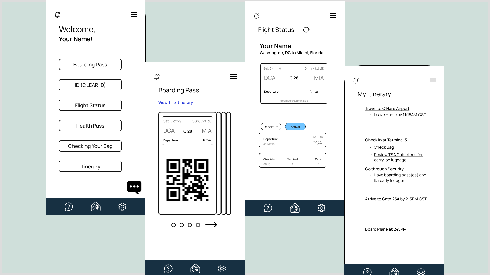

AirFair UI/UX Designathon
Timeline
October 2022 - October 2022
Medium & Tools
FigJam Whiteboard, Figma, Maze, Google Forms
Role and Responsibilities
I drafted wireframes, lo-fi prototypes, created initial
logo design, and organized the UX research from our Google Form and Maze and
our whole process into a slide deck.
Project Background and Overview
I joined a two day designathon from UX Scene in a team of four
to create a mobile app design and prototype. The designathon journey began with initial
mobile app ideas geared towards making the airport check-in process easier and more
accessible. We began with goal sprints, then moved to user research, worked on individual
wireframes, and finally completed several rounds of prototypes.
What's the Problem?
The elderly typically experience a technological disconnect during commercial
air travel, and users over the age of 65 often have a harder time navigating the airline check-in
process and airports in general. We wanted to create a solution with a mobile application design
that would make this easier and more intuitive for older individuals as well as those that travel
often.
Research and Understanding Users
User Flow and Surveys
We explored the typical user flow of a person navigating an airport and making
their way on board a plane. After sending out a questionnaire answered by over 50 individuals, I
compiled the results to discover several pain points and typical issues that airport goers often
ran into.

Pain Points
People found that locating gates and figuring out general airport directions was
difficult. Preparing documents and conducting pre-boarding activities was also particularly tedious.
Another issue was having too many apps and places to find this information.
Personas
We created two personas for this design, based on user responses to the survey.
Refining the Design
Wireframes
In my team, we spent time creating our own wireframes over two rounds of feedback.
My drafts are below.
After compiling our wireframes, we refined our ideas to four main concepts that we
wanted our application design to include:
Landing page with different login options
Travel wallet with all documents needed for airport travel
Stored boarding passes
Main menu with navigation options
Lo-fi Prototype
Usability Studies
Using Maze, we tested the user flow of our lo-fi prototype with three users that
fit our primary demographic (60+ year olds that found airport travel difficult). I compiled the information
we gathered from the platform to gain insight on the accessibility of our design. Users appreciated the big
lettering and that it was easy to read. Users wanted to feel as if they were making progress while accessing
information and also wanted icons that made more sense and were more intuitive.
Mid-fi Prototype

Hi-fi Prototype

Live Walkthrough
Reflections and Future Considerations
This was the first UX Design project I had the opportunity to work on, and I learned a
lot about the UX Design process from it. From this two day event, I learned how to better navigate Figma and
work with experienced individuals in the industry.
Given more time, I would like to further explore the user research component in more depth
by running interviews and conducting more usability studies between each redesign level of prototyping. We did
run into challenges in that aspect given that we could only retrieve responses for surveys from that weekend.
While this was only a design mockup, I would be interested in continuing this project or a
similar one to add some backend and expand on accessibility options for specific phone models.
Feel free to check out the original project post on Devpost below, or see the prototype and
slide deck above.